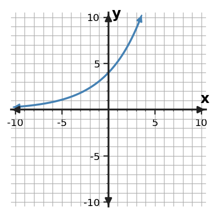
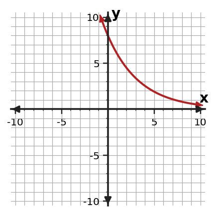
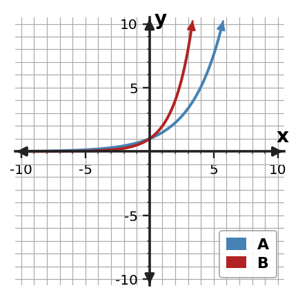

1
Make a small table of key points and sketch $y=8(\frac{4}{3})^x$. Label the $y$-intercept and horizontal asymptote.
Partner signature: ____________________
Work / reasoning
Work independently first. Compare with a partner, explain one unfinished or disagreed-on problem, then ask for a signature only after both students understand the reasoning.
Make a small table of key points and sketch $y=8(\frac{4}{3})^x$. Label the $y$-intercept and horizontal asymptote.
Without graphing every point, identify the $y$-intercept of $f(x)=3(3)^x$ and explain how you know.
For the basic exponential function $y=3(\frac{5}{4})^x$, state the horizontal asymptote and describe whether the graph reaches it.
State the domain and range of $f(x)=3(2)^x$.
Use the graph to identify the $y$-intercept, describe the end behavior, and decide whether it shows exponential growth or decay.

A student graphs $y=8(0.5)^x$ approaching but not touching the x-axis as x increases. Decide whether it is reasonable, citing the intercept/asymptote behavior that matters.
Graphs A and B have the same positive initial value, but one uses factor 1.5 and the other uses factor 2. Which graph grows faster for positive $x$? Explain how the graph supports your answer.

Describe what happens to $f(x)=12(\frac{4}{3})^x$ as $x$ becomes very large and as $x$ becomes very negative.
A medication amount is modeled by $A(t)=80(0.75)^t$. Describe the graph’s initial value and long-term behavior in the context.
For $f(x)=5(\frac{4}{5})^x$, complete a key-point table for $x=-1,0,1,2$. Use the points to describe the graph as growth or decay.
Make a small table of key points and sketch $y=2(\frac{3}{2})^x$. Label the $y$-intercept and horizontal asymptote.
Without graphing every point, identify the $y$-intercept of $f(x)=5(\frac{1}{2})^x$ and explain how you know.
For the basic exponential function $y=5(\frac{5}{4})^x$, state the horizontal asymptote and describe whether the graph reaches it.
State the domain and range of $f(x)=8(\frac{3}{2})^x$.
Use the graph to identify the $y$-intercept, describe the end behavior, and decide whether it shows exponential growth or decay.

A student graphs $y=5(0.6)^x$ and draws the curve crossing the x-axis at $x=4$. Decide whether it is reasonable, citing the intercept/asymptote behavior that matters.
Graphs A and B start at the same positive value. Which graph will have the larger output at $x=3$? Use the factors shown by the graph family to justify your choice.

Describe what happens to $f(x)=6(\frac{3}{2})^x$ as $x$ becomes very large and as $x$ becomes very negative.
Solve $x^{2} + 6 x - 16=0$ by completing the square.
Rewrite $y=x^2+4x-3$ in vertex form by completing the square, then state the vertex.
Solve $(x-1)^2=4$ by using the square-root step that appears after completing the square.
For $f(x)=(x+3)(x-2)$, find the zeros and state the corresponding $x$-intercepts.
A monic quadratic has zeros $x=3$ and $x=6$. Write the function in factored form and identify its $x$-intercepts.
The graph crosses the $x$-axis at $x=-4$ and $x=1$. Write a possible monic quadratic in factored form and explain how the factors encode the intercepts.

Make a small table of key points and sketch $y=8(\frac{4}{3})^x$. Label the $y$-intercept and horizontal asymptote.
Useful points include $(-1,6)$, $(0,8)$, $(1,\frac{32}{3})$, $(2,\frac{128}{9})$. The $y$-intercept is $(0,8)$ and the horizontal asymptote is $y=0$.
Without graphing every point, identify the $y$-intercept of $f(x)=3(3)^x$ and explain how you know.
At $x=0$, the exponential factor is 1, so $f(0)=3$. The $y$-intercept is $(0,3)$.
For the basic exponential function $y=3(\frac{5}{4})^x$, state the horizontal asymptote and describe whether the graph reaches it.
The horizontal asymptote is $y=0$. The graph approaches the asymptote but does not reach or cross it.
State the domain and range of $f(x)=3(2)^x$.
Domain: all real numbers. Range: $y\gt0$.
Use the graph to identify the $y$-intercept, describe the end behavior, and decide whether it shows exponential growth or decay.
The graph has a positive $y$-intercept, approaches $y=0$ to the left, and rises rapidly to the right; it shows exponential growth.
A student graphs $y=8(0.5)^x$ approaching but not touching the x-axis as x increases. Decide whether it is reasonable, citing the intercept/asymptote behavior that matters.
Reasonable. The described intercept and/or asymptote behavior matches the equation.
Graphs A and B have the same positive initial value, but one uses factor 1.5 and the other uses factor 2. Which graph grows faster for positive $x$? Explain how the graph supports your answer.
The graph with factor 2 grows faster. It rises more steeply and its outputs separate increasingly from the factor-1.5 graph as $x$ increases.
Describe what happens to $f(x)=12(\frac{4}{3})^x$ as $x$ becomes very large and as $x$ becomes very negative.
As $x\to\infty$, $f(x)$ grows without bound; as $x\to-\infty$, $f(x)$ approaches 0 from above.
A medication amount is modeled by $A(t)=80(0.75)^t$. Describe the graph’s initial value and long-term behavior in the context.
The model starts at 80 units when $t=0$ and decreases toward 0 as time increases. The graph approaches, but does not reach, 0 in the model.
For $f(x)=5(\frac{4}{5})^x$, complete a key-point table for $x=-1,0,1,2$. Use the points to describe the graph as growth or decay.
| x | f(x) |
|---|---|
| -1 | $\frac{25}{4}$ |
| 0 | $\displaystyle 5$ |
| 1 | $\displaystyle 4$ |
| 2 | $\frac{16}{5}$ |
The graph shows decay.
Make a small table of key points and sketch $y=2(\frac{3}{2})^x$. Label the $y$-intercept and horizontal asymptote.
Useful points include $(-1,\frac{4}{3})$, $(0,2)$, $(1,3)$, $(2,\frac{9}{2})$. The $y$-intercept is $(0,2)$ and the horizontal asymptote is $y=0$.
Without graphing every point, identify the $y$-intercept of $f(x)=5(\frac{1}{2})^x$ and explain how you know.
At $x=0$, the exponential factor is 1, so $f(0)=5$. The $y$-intercept is $(0,5)$.
For the basic exponential function $y=5(\frac{5}{4})^x$, state the horizontal asymptote and describe whether the graph reaches it.
The horizontal asymptote is $y=0$. The graph approaches the asymptote but does not reach or cross it.
State the domain and range of $f(x)=8(\frac{3}{2})^x$.
Domain: all real numbers. Range: $y\gt0$.
Use the graph to identify the $y$-intercept, describe the end behavior, and decide whether it shows exponential growth or decay.
The graph has a positive $y$-intercept, decreases toward $y=0$ to the right, and grows to the left; it shows exponential decay.
A student graphs $y=5(0.6)^x$ and draws the curve crossing the x-axis at $x=4$. Decide whether it is reasonable, citing the intercept/asymptote behavior that matters.
Not reasonable. A basic positive exponential graph has horizontal asymptote $y=0$ and does not cross it.
Graphs A and B start at the same positive value. Which graph will have the larger output at $x=3$? Use the factors shown by the graph family to justify your choice.
Graph B. Its factor is 2, so its output at $x=3$ is 8, while Graph A with factor 1.5 has output 3.375.
Describe what happens to $f(x)=6(\frac{3}{2})^x$ as $x$ becomes very large and as $x$ becomes very negative.
As $x\to\infty$, $f(x)$ grows without bound; as $x\to-\infty$, $f(x)$ approaches 0 from above.
Solve $x^{2} + 6 x - 16=0$ by completing the square.
$(x+3)^2=25$, so $x=2$ or $x=-8$.
Rewrite $y=x^2+4x-3$ in vertex form by completing the square, then state the vertex.
$y=(x+2)^2-7$. The vertex is $(-2,-7)$.
Solve $(x-1)^2=4$ by using the square-root step that appears after completing the square.
$x=3$ or $x=-1$.
For $f(x)=(x+3)(x-2)$, find the zeros and state the corresponding $x$-intercepts.
Zeros: $x=-3$ and $x=2$; $x$-intercepts: $(-3,0)$ and $(2,0)$.
A monic quadratic has zeros $x=3$ and $x=6$. Write the function in factored form and identify its $x$-intercepts.
$f(x)=(x-3)(x-6)$; intercepts $(3,0)$ and $(6,0)$.
The graph crosses the $x$-axis at $x=-4$ and $x=1$. Write a possible monic quadratic in factored form and explain how the factors encode the intercepts.
A possible function is $f(x)=(x+4)(x-1)$. Each factor is zero at one $x$-intercept.